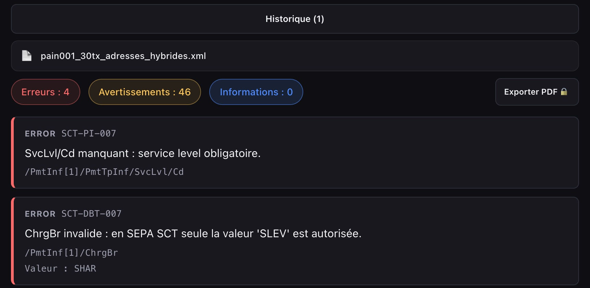
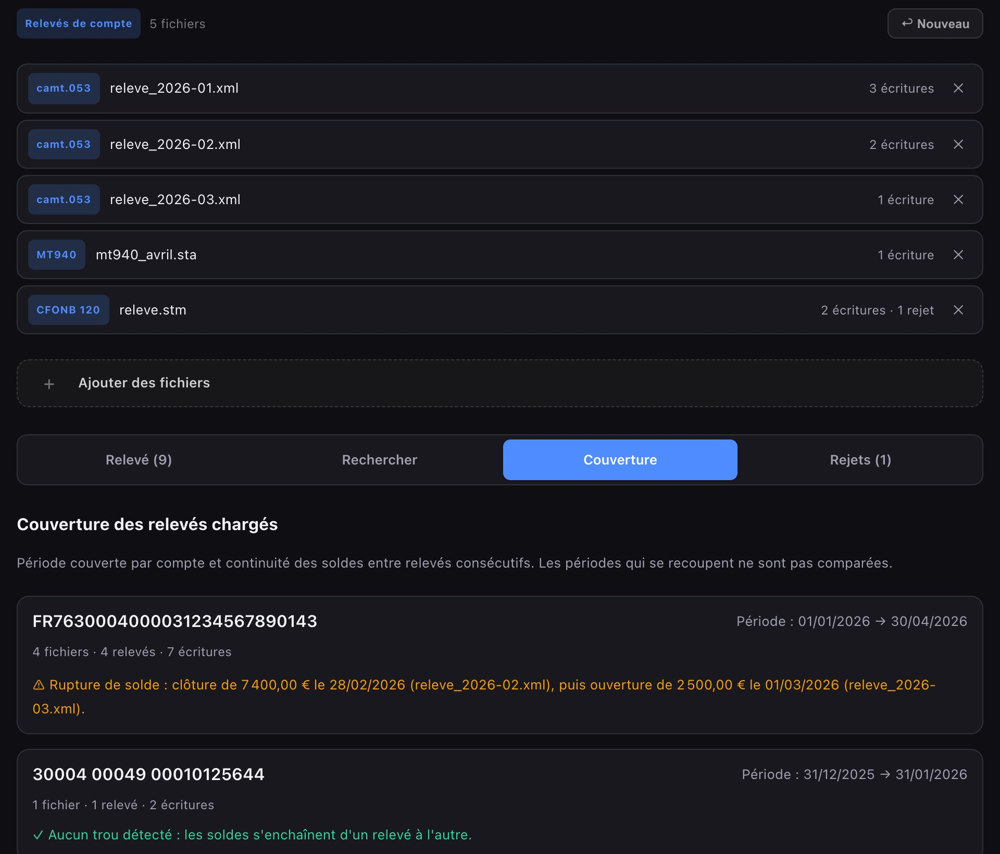

Prendre en main EDI Insight, fonction par fonction.
Valider un fichier, lire des relevés, comprendre un rejet, structurer des adresses, produire un fichier pour la banque : ce guide reprend chaque écran de l'application, avec ses libellés réels, étape par étape.
EDI Insight est un outil spécialisé dans les flux de paiement bancaires : virements et prélèvements SEPA au format ISO 20022, relevés et comptes rendus (camt, pain.002, pacs.002, MT940, CFONB 120), codes erreurs EBICS et messages EDIFACT. Il s'adresse aux trésoriers, cash managers, consultants EDI, éditeurs et intégrateurs. Rien à installer : tout se passe dans le navigateur.
01
Valider un fichier avant l'envoi
Contrôle d'un pain.001 ou pain.008 selon le rulebook choisi, anomalie par anomalie.
02
Lire vos relevés et vos retours
1 à 50 fichiers à la fois : écritures, recherche, couverture des soldes, rejets expliqués.
03
Anticiper les exigences de votre banque
« Pourquoi ? » liste les points de contrôle selon le format, la version EBICS et le pays.
04
Structurer vos adresses
Conversion des adresses en texte libre (AdrLine) vers l'adresse structurée ISO 20022.
05
Générer des fichiers
Fichiers de test à données fictives, ou vrais fichiers transmissibles depuis un CSV.
Vos fichiers (montants, IBAN, noms de tiers…) sont lus uniquement par votre navigateur, sur votre poste. Ils ne sont ni envoyés ni stockés sur un serveur. Les historiques de l'app ne gardent que des repères (date, nom du fichier, compteurs), jamais le contenu.
Démarrer en 4 étapes
Ouvrez app.ediinsight.app. Aucune installation, aucun compte pour les fonctions gratuites.
Utilisez librement Valider, Comparer, le fichier de test et tous les référentiels.
Pour une fonction payante, saisissez votre e-mail : vous recevez un code à taper dans l'app. Pas de mot de passe.
Déposez votre fichier : le résultat s'affiche aussitôt.
Où trouver quoi
La barre du haut contient cinq onglets ; votre compte est en haut à droite, sous vos initiales.
Les mentions Gratuit et Pro indiquent l'accès nécessaire. Les libellés entre guillemets sont ceux que vous verrez à l'écran.
00
Se connecter
Gratuit
Connexion sans mot de passe, par code à usage unique. Vous restez sur la page où vous étiez.
Ouvrez une fonction payante, par exemple Analyser → Diagnostiquer : l'écran de connexion s'affiche.
Saisissez votre e-mail, puis cliquez sur « Recevoir un code de connexion ».
Tapez le code reçu par e-mail, puis cliquez sur « Se connecter ». Vos initiales apparaissent en haut à droite.
Le code remplace le lien cliquable : il fonctionne même quand un filtre anti-spam « pré-ouvre » les liens. Il expire au bout d'une heure ; il suffit d'en redemander un.
01
Valider
GratuitExport PDF : Pro
Analyser → Valider
Contrôle la conformité d'un fichier XML de virement ou de prélèvement selon le rulebook du flux.
Choisissez le Rulebook : SCT Standard, SCT Inst, SDD Core, SDD B2B, Trésorerie / VSOT ou International.
Cliquez sur « Importer un fichier XML », ou glissez-déposez le fichier.
Lisez les compteurs Erreurs, Avertissements et Informations, puis chaque anomalie : code de la règle, explication, chemin XML exact et valeur trouvée.
Besoin d'une trace ? Cliquez sur « Exporter PDF » Pro.
Retrouvez vos contrôles dans « Historique » (date, fichier, rulebook, compteurs ; le contenu n'est pas gardé).
Fichier en erreur ? « Fichier KO ? Obtiens le diagnostic complet → » vous emmène au diagnostic.
Analyser · Valider

Un virement de 30 opérations contrôlé en SCT Standard (données fictives).
02
Diagnostiquer : relevés et retours
Pro
Analyser → Diagnostiquer
Lit de 1 à 50 fichiers à la fois (20 Mo maximum chacun), à condition qu'ils soient de la même famille :
Retours et impayés : pain.002, pacs.002, camt.054, comptes rendus EBICS.
Intraday : camt.052 (sans soldes, donc sans bilan de couverture).
Déposez vos fichiers ; « Ajouter des fichiers » permet d'en charger d'autres ensuite.
Relevé : toutes les écritures des fichiers chargés.
Rechercher : par montant (exact, fourchette ou ±), sens, période ou texte libre. Tapez « − » devant un montant pour ne voir que les débits, « + » pour les crédits. Un chèque est retrouvé même à l'intérieur d'une remise.
Couverture : période couverte par compte, trous entre relevés et ruptures de solde.
Rejets : chaque opération rejetée devient une carte avec Message banque, Description, Causes probables, Actions recommandées et niveau de Confiance.
Exportez les résultats en CSV, pour tous les fichiers à la fois.
Analyser · Diagnostiquer

Quatre mois de relevés en camt.053, MT940 et CFONB 120 : la rupture de solde entre février et mars est signalée (données fictives).
« Aucun rejet détecté » signifie que le compte rendu est bon : tout est passé.
03
Comparer
Gratuit
Analyser → Comparer
Compare la structure de deux fichiers XML, par exemple deux versions d'un même message (pain.001.001.03 et .09).
Chargez le « Fichier A — ancienne version » puis le « Fichier B — nouvelle version ».
Cliquez sur « Comparer → ».
Lisez les balises Ajoutées, Supprimées et les Renommages probables.
04
Pourquoi ? Les exigences de votre banque
Pro
Analyser → Pourquoi ?
Un fichier conforme au rulebook peut quand même être refusé : chaque banque, chaque pays et chaque version d'EBICS ajoute ses exigences. « Pourquoi ? » les rassemble avant l'envoi.
Choisissez le Format / Service, la Version EBICS (H003, H004, H005) et le Pays. La Banque est facultative.
Cliquez sur « Afficher les contraintes → ».
Parcourez les sections et les « Points de contrôle avant envoi ». Chaque section indique son niveau de fiabilité : Vérifié (référentiel) ou Connaissance générale.
Les indications générales ne remplacent pas le cahier des charges de votre banque : en cas de doute, c'est lui qui fait foi.
05
Adresses structurées
Convertisseur ou Pro
Analyser → Adresses
Convertit les adresses en texte libre (AdrLine) en adresses structurées ISO 20022 (StrtNm, BldgNb, PstCd, TwnNm, Ctry). Elles deviendront obligatoires à l'échéance de la migration SWIFT, initialement prévue en novembre 2026 et reportée depuis (nouvelle date non communiquée).
« Importer un fichier XML ou CSV » : un fichier de paiement, ou votre référentiel de tiers (modèle CSV téléchargeable).
Pour chaque adresse : l'adresse originale et sa version structurée ISO 20022, avec son statut : À convertir, À compléter, Incomplet ou déjà conforme.
Complétez les champs manquants (★ = obligatoire), puis « Valider cette adresse ». Une adresse impossible à corriger peut être exclue du fichier purgé.
« Exporter les fichiers » : le fichier complet, le fichier purgé (sans les KO, NbOfTxs et CtrlSum recalculés, prêt à envoyer) et le journal des exclusions.
Essai gratuit : une fois, après connexion, pour un fichier de 25 adresses au maximum. Au-delà : abonnement Convertisseur ou Pro.
06
Générer un fichier de test
Gratuit
Analyser → Générer → Fichier de test
Produit un fichier à données fictives pour éprouver vos contrôles, vos recettes ou votre chaîne de traitement.
Choisissez le Format : SCT, SCT Inst, SDD Core, SDD B2B, Trésorerie ou International.
Indiquez le Nombre de transactions.
Mode « Valide », ou « Invalide » pour choisir les Défauts à injecter (date passée, IBAN invalide, devise non EUR…).
Téléchargez le XML, ou faites-le contrôler dans Valider.
07
Générer depuis mes données
Générateur ou Pro
Analyser → Générer → Depuis mes données
Produit un vrai fichier bancaire de virement (SCT) ou de prélèvement (SDD) à partir d'un CSV, contrôlé au rulebook avant le téléchargement.
Renseignez l'en-tête : donneur d'ordre (virement) ou créancier (prélèvement), date d'exécution ou de prélèvement.
« Importer un fichier CSV » au format du modèle fourni : Beneficiaire ; IBAN ; Montant pour un virement, Debiteur ; IBAN ; Montant ; ReferenceMandat ; DateMandat pour un prélèvement.
Pour un prélèvement, choisissez le Schéma et le Type de séquence. Réglez les Écritures sur relevé (comptabilisation globale ou unitaire).
Vérifiez montants et IBAN sur l'écran de confirmation, puis « J'ai vérifié — télécharger ».
Vous restez responsable des données et du fichier transmis à votre banque : le contrôle porte sur la conformité du format, pas sur l'exactitude de vos données.
08
Référentiels, codes EBICS et codes rejets
Signification : gratuitRésolution : Pro
Référentiels · EBICS · Plus
Référentiels : Services (dont BTF EBICS 3.0), Balises XML ISO 20022, Codes rejets ISO, EDIFACT. Chaque page a sa recherche.
EBICS : les codes 090xxx et 091xxx, filtrables par catégorie (authentification, certificat, technique, métier, information) et par gravité.
La signification d'un code est gratuite. La résolution (causes probables, actions recommandées, qui doit agir, rejeu possible ou non) est réservée aux abonnés Pro.
09
S'abonner et gérer son compte
Sur un écran payant, cochez « J'ai lu et j'accepte les CGV » : les boutons de prix s'activent.
Choisissez l'offre et la période. Le paiement s'ouvre chez Stripe ; la facture est automatique.
Au retour, l'accès est actif tout de suite et vous revenez sur la fonction.
Résiliez à tout moment depuis vos initiales → Compte ; l'accès reste ouvert jusqu'à la fin de la période payée.
Sans engagement, résiliable à tout moment. TVA non applicable, art. 293 B du CGI.
Gratuit
0 €
Sans compte
Valider un fichier
Comparer deux fichiers
Fichier de test
Référentiels et significations des codes
Pro · tout inclus
35 €/ mois
ou 360 € par an
Diagnostiquer : relevés et rejets
Pourquoi ?
Résolutions EBICS et codes rejets
Convertisseur et générateur
Export PDF
Convertisseur
25 €/ mois
ou 250 € par an
Adresses structurées ISO 20022
Conversion illimitée
Fichier complet, purgé et journal
Générateur
20 €/ mois
ou 220 € par an
CSV → pain.001 / pain.008
Virements et prélèvements illimités
Contrôle au rulebook intégré
Équipe ou entreprise : plusieurs utilisateurs, une facture unique au nom de la société, sur devis.
Bonnes pratiques
Enchaînez Valider → Diagnostiquer pour passer d'un fichier KO à sa correction.
Avant un envoi sur une nouvelle banque ou un nouveau pays, passez par Pourquoi ?.
Utilisez le fichier de test en mode « Invalide » pour vérifier que vos propres contrôles détectent bien les erreurs.
Autorisez les fenêtres pop-up pour l'export PDF : il s'ouvre dans un nouvel onglet d'impression.
Relisez toujours l'écran de confirmation avant de transmettre un fichier généré à votre banque.
EDI Insight existe aussi sur iPhone et iPad (App Store) ; l'abonnement est lié à votre e-mail, pas à l'appareil.
EDI Insight · Alexandre Voisin, entrepreneur individuel · Issy-les-Moulineaux, France · SIRET 104 758 826 00010 Guide susceptible d'évoluer avec l'application. Dernière mise à jour : novembre 2026.